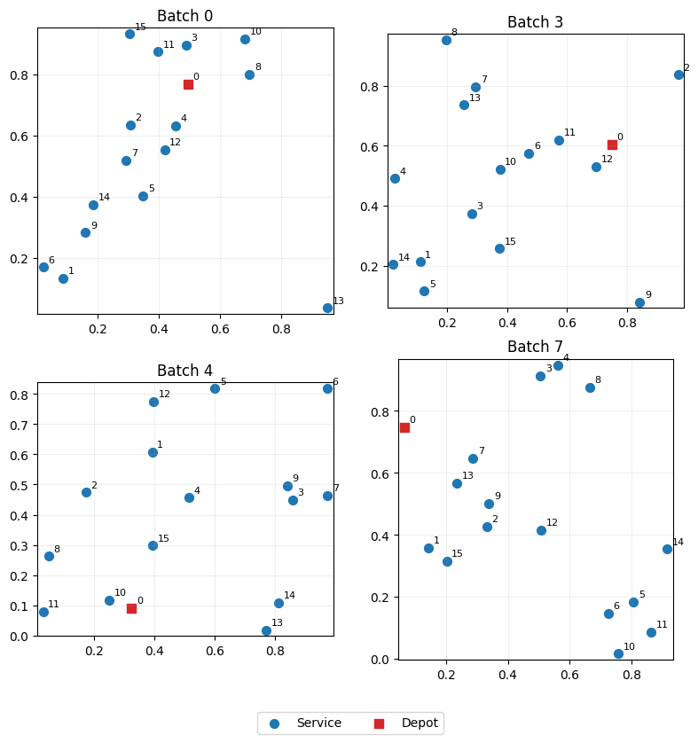
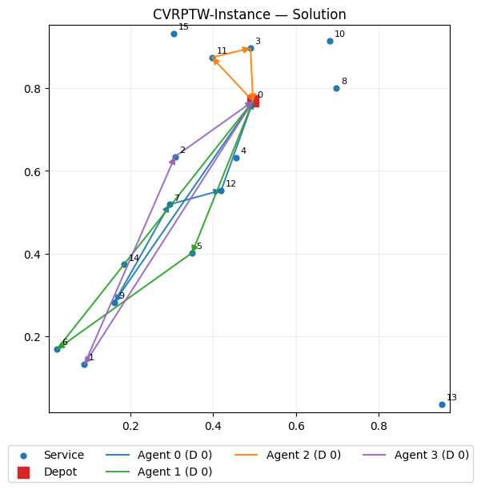
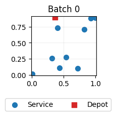
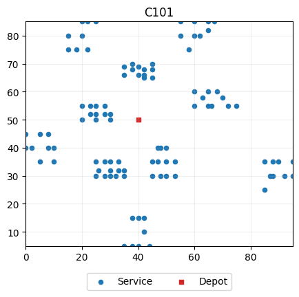
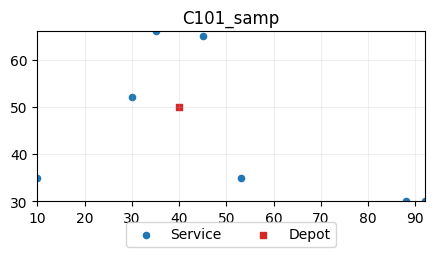

Quickstart¶
Install MAEnvs4VRP¶
Uncomment the following cells:
[1]:
#!git clone https://github.com/ricgama/maenvs4vrp.git
[2]:
# When using Colab
#%cd maenvs4vrp
#%mv maenvs4vrp/ repo_temp/
#%mv repo_temp/ ..
#%cd ..
#%cp maenvs4vrp/setup.py repo_temp/
#%rm -r maenvs4vrp
#%mv repo_temp/ maenvs4vrp/
#%cd maenvs4vrp/
#!pip install .
Let’s begin exploring the MAEnvs4VRP library using the CVRPTW (Capacitated Vehicle Routing Problem with Time Windows) environment as our working example. The library’s API design is inspired by the PettingZoo, which adopts the Agent Environment Cycle (AEC) paradigm—where agents act in a defined sequence within a shared environment. Additionally, the library draws influence from the Flatland environment, adopting several of its design principlesy.
Basic usage¶
[3]:
from maenvs4vrp.environments.cvrptw.env import Environment
from maenvs4vrp.environments.cvrptw.env_agent_selector import AgentSelector
from maenvs4vrp.environments.cvrptw.observations import Observations
from maenvs4vrp.environments.cvrptw.instances_generator import InstanceGenerator
from maenvs4vrp.environments.cvrptw.env_agent_reward import DenseReward
[4]:
gen = InstanceGenerator(batch_size = 8)
obs = Observations()
sel = AgentSelector()
rew = DenseReward()
env = Environment(instance_generator_object=gen,
obs_builder_object=obs,
agent_selector_object=sel,
reward_evaluator=rew,
seed=0)
[5]:
td = env.reset_agent_select_observe(batch_size = 8, num_agents=4, num_nodes=16)
td
[5]:
TensorDict(
fields={
agent_step: Tensor(shape=torch.Size([8, 1]), device=cpu, dtype=torch.int32, is_shared=False),
cur_agent_idx: Tensor(shape=torch.Size([8, 1]), device=cpu, dtype=torch.int64, is_shared=False),
done: Tensor(shape=torch.Size([8]), device=cpu, dtype=torch.bool, is_shared=False),
observations: TensorDict(
fields={
action_mask: Tensor(shape=torch.Size([8, 16]), device=cpu, dtype=torch.bool, is_shared=False),
agent_cur_node_idx: Tensor(shape=torch.Size([8, 1]), device=cpu, dtype=torch.int64, is_shared=False),
agent_obs: Tensor(shape=torch.Size([8, 1]), device=cpu, dtype=torch.float32, is_shared=False),
nodes_static_obs: Tensor(shape=torch.Size([8, 16, 4]), device=cpu, dtype=torch.float32, is_shared=False)},
batch_size=torch.Size([8]),
device=cpu,
is_shared=False),
penalty: Tensor(shape=torch.Size([8]), device=cpu, dtype=torch.float32, is_shared=False),
reward: Tensor(shape=torch.Size([8]), device=cpu, dtype=torch.float32, is_shared=False)},
batch_size=torch.Size([8]),
device=cpu,
is_shared=False)
[6]:
while not td["done"].all():
td = env.sample_action(td) # this is where we insert our policy
td = env.step_agent_select_observe(td)
Basic usage in more detail¶
[7]:
from maenvs4vrp.utils.plotting import (plot_instance_coords, plot_random_batch_instances, plot_env_instance_coords, plot_env_random_batch_instances, plot_solution)
from maenvs4vrp.utils.utils import get_solution
[8]:
# Import the main Environment class for the CVRPTW (Capacitated Vehicle Routing Problem with Time Windows) environment
from maenvs4vrp.environments.cvrptw.env import Environment
# Import the AgentSelector which handles agent selection logic in the environment
from maenvs4vrp.environments.cvrptw.env_agent_selector import AgentSelector
# Import the Observations class that defines how observations are structured and generated
from maenvs4vrp.environments.cvrptw.observations import Observations
# Import the InstanceGenerator for creating CVRPTW problem instances
from maenvs4vrp.environments.cvrptw.instances_generator import InstanceGenerator
# Import the DenseReward class which provides detailed reward signals during training
from maenvs4vrp.environments.cvrptw.env_agent_reward import DenseReward
[9]:
gen = InstanceGenerator(batch_size = 8)
obs = Observations()
sel = AgentSelector()
rew = DenseReward()
env = Environment(instance_generator_object=gen,
obs_builder_object=obs,
agent_selector_object=sel,
reward_evaluator=rew,
seed=0)
After instantiating the environment we have to reset it:
[10]:
td = env.reset_agent_select_observe(batch_size = 8, num_agents=4, num_nodes=16)
td
[10]:
TensorDict(
fields={
agent_step: Tensor(shape=torch.Size([8, 1]), device=cpu, dtype=torch.int32, is_shared=False),
cur_agent_idx: Tensor(shape=torch.Size([8, 1]), device=cpu, dtype=torch.int64, is_shared=False),
done: Tensor(shape=torch.Size([8]), device=cpu, dtype=torch.bool, is_shared=False),
observations: TensorDict(
fields={
action_mask: Tensor(shape=torch.Size([8, 16]), device=cpu, dtype=torch.bool, is_shared=False),
agent_cur_node_idx: Tensor(shape=torch.Size([8, 1]), device=cpu, dtype=torch.int64, is_shared=False),
agent_obs: Tensor(shape=torch.Size([8, 1]), device=cpu, dtype=torch.float32, is_shared=False),
nodes_static_obs: Tensor(shape=torch.Size([8, 16, 4]), device=cpu, dtype=torch.float32, is_shared=False)},
batch_size=torch.Size([8]),
device=cpu,
is_shared=False),
penalty: Tensor(shape=torch.Size([8]), device=cpu, dtype=torch.float32, is_shared=False),
reward: Tensor(shape=torch.Size([8]), device=cpu, dtype=torch.float32, is_shared=False)},
batch_size=torch.Size([8]),
device=cpu,
is_shared=False)
Understanding the ``TensorDict`` Keys
The TensorDict acts like a dictionary of tensors holding all the state, observation, and reward information for a batch of agents in your environment. In this case, the batch size is 8, meaning it holds data for 8 parallel environments.
Top-Level Keys
Key |
Shape |
Description |
|---|---|---|
|
|
Current step number of each agent in the environment. |
|
|
Index of the agent currently taking an action. |
|
|
Whether each environment/episode is finished ( |
|
|
step Penalty. |
|
|
step Reward signal. |
Nested ``observations`` TensorDict
This contains all the observation-related tensors provided to the agent at each step.
Key (inside |
Shape |
Description |
|---|---|---|
|
|
Mask of valid/invalid actions for each agent at each step. |
|
|
Individual agent’s features/observations. |
|
|
Mask showing which agents are active/available. |
|
|
Index of the agent current node. |
|
|
Static (fixed) features of each node/location. |
Let’s visualize some environments instances:
[11]:
plot_env_random_batch_instances(env, n=4)

and now, perform an episode rollover:
[12]:
while not td["done"].all():
td = env.sample_action(td) # this is where we insert our policy
td = env.step_agent_select_observe(td)
and we can visualize the solution:
[13]:
plot_solution(env, batch_idx=0)

Quick walkthrough¶
Let’s now go through the library’s building blocks, exploring their functionalities.
Instance generation¶
We can generate instances using one of the two available methods InstanceGenerator and BenchmarkInstanceGenerator:
[14]:
from maenvs4vrp.environments.cvrptw.instances_generator import InstanceGenerator
from maenvs4vrp.environments.cvrptw.benchmark_instances_generator import BenchmarkInstanceGenerator
Random instances are generated following:
Li, S., Yan, Z., & Wu, C. (2021). Learning to delegate for large-scale vehicle routing. Advances in Neural Information Processing Systems, 34, 26198-26211.
[15]:
generator = InstanceGenerator()
[16]:
instance = generator.sample_instance(num_agents=2, num_nodes=10)
[17]:
plot_random_batch_instances(instance,
n=1,
figsize_per_plot=(2,2),
annotate=False,
)

[18]:
instance.keys()
[18]:
dict_keys(['name', 'num_nodes', 'num_agents', 'data'])
[19]:
instance
[19]:
{'name': 'random_instance',
'num_nodes': 10,
'num_agents': 2,
'data': TensorDict(
fields={
capacity: Tensor(shape=torch.Size([1, 1]), device=cpu, dtype=torch.float32, is_shared=False),
coords: Tensor(shape=torch.Size([1, 10, 2]), device=cpu, dtype=torch.float32, is_shared=False),
demands: Tensor(shape=torch.Size([1, 10]), device=cpu, dtype=torch.float32, is_shared=False),
depot_idx: Tensor(shape=torch.Size([1, 1]), device=cpu, dtype=torch.int64, is_shared=False),
end_time: Tensor(shape=torch.Size([1]), device=cpu, dtype=torch.float32, is_shared=False),
is_depot: Tensor(shape=torch.Size([1, 10]), device=cpu, dtype=torch.bool, is_shared=False),
service_time: Tensor(shape=torch.Size([1, 10]), device=cpu, dtype=torch.float32, is_shared=False),
speed: Tensor(shape=torch.Size([1, 1]), device=cpu, dtype=torch.float32, is_shared=False),
start_time: Tensor(shape=torch.Size([1]), device=cpu, dtype=torch.float32, is_shared=False),
tw_high: Tensor(shape=torch.Size([1, 10]), device=cpu, dtype=torch.float32, is_shared=False),
tw_low: Tensor(shape=torch.Size([1, 10]), device=cpu, dtype=torch.float32, is_shared=False)},
batch_size=torch.Size([1]),
device=cpu,
is_shared=False)}
Understanding the VRP Instance
TensorDict of all the data needed to define the problem.Top-Level Metadata
Key |
Value / Type |
Description |
|---|---|---|
|
|
Name or identifier of the VRP instance. |
|
|
Total number of nodes (customers + depot). |
|
|
Number of agents/vehicles available. |
Nested ``data`` TensorDict
This contains all the features of the VRP instance.
Key (inside |
Shape |
Description |
|---|---|---|
|
|
Vehicle capacity constraint. |
|
|
Coordinates (x, y) of each node (including depot). |
|
|
Demand at each node. |
|
|
Index of the depot node. |
|
|
Latest allowed time for route completion. |
|
|
Boolean mask indicating which node is the depot. |
|
|
Service time required at each node. |
|
|
Earliest allowed time for route start. |
|
|
Upper bounds of time windows for each node. |
|
|
Lower bounds of time windows for each node. |
It’s possible to load a set of pre-generaded instances, to be used as validation/test sets. For example:
[20]:
generator.get_list_of_benchmark_instances()
[20]:
{'servs_100_agents_25': {'validation': ['cvrptw/data/generated/servs_100_agents_25/validation/generated_val_servs_100_agents_25_0',
'cvrptw/data/generated/servs_100_agents_25/validation/generated_val_servs_100_agents_25_1',
'cvrptw/data/generated/servs_100_agents_25/validation/generated_val_servs_100_agents_25_10',
'cvrptw/data/generated/servs_100_agents_25/validation/generated_val_servs_100_agents_25_11',
'cvrptw/data/generated/servs_100_agents_25/validation/generated_val_servs_100_agents_25_12',
'cvrptw/data/generated/servs_100_agents_25/validation/generated_val_servs_100_agents_25_13',
'cvrptw/data/generated/servs_100_agents_25/validation/generated_val_servs_100_agents_25_14',
'cvrptw/data/generated/servs_100_agents_25/validation/generated_val_servs_100_agents_25_15',
'cvrptw/data/generated/servs_100_agents_25/validation/generated_val_servs_100_agents_25_16',
'cvrptw/data/generated/servs_100_agents_25/validation/generated_val_servs_100_agents_25_17',
'cvrptw/data/generated/servs_100_agents_25/validation/generated_val_servs_100_agents_25_18',
'cvrptw/data/generated/servs_100_agents_25/validation/generated_val_servs_100_agents_25_31',
'cvrptw/data/generated/servs_100_agents_25/validation/generated_val_servs_100_agents_25_32',
'cvrptw/data/generated/servs_100_agents_25/validation/generated_val_servs_100_agents_25_33',
'cvrptw/data/generated/servs_100_agents_25/validation/generated_val_servs_100_agents_25_34',
'cvrptw/data/generated/servs_100_agents_25/validation/generated_val_servs_100_agents_25_35',
'cvrptw/data/generated/servs_100_agents_25/validation/generated_val_servs_100_agents_25_36',
'cvrptw/data/generated/servs_100_agents_25/validation/generated_val_servs_100_agents_25_37',
'cvrptw/data/generated/servs_100_agents_25/validation/generated_val_servs_100_agents_25_38',
'cvrptw/data/generated/servs_100_agents_25/validation/generated_val_servs_100_agents_25_39',
'cvrptw/data/generated/servs_100_agents_25/validation/generated_val_servs_100_agents_25_4',
'cvrptw/data/generated/servs_100_agents_25/validation/generated_val_servs_100_agents_25_40',
'cvrptw/data/generated/servs_100_agents_25/validation/generated_val_servs_100_agents_25_41',
'cvrptw/data/generated/servs_100_agents_25/validation/generated_val_servs_100_agents_25_43',
'cvrptw/data/generated/servs_100_agents_25/validation/generated_val_servs_100_agents_25_44',
'cvrptw/data/generated/servs_100_agents_25/validation/generated_val_servs_100_agents_25_45',
'cvrptw/data/generated/servs_100_agents_25/validation/generated_val_servs_100_agents_25_46',
'cvrptw/data/generated/servs_100_agents_25/validation/generated_val_servs_100_agents_25_47',
'cvrptw/data/generated/servs_100_agents_25/validation/generated_val_servs_100_agents_25_48',
'cvrptw/data/generated/servs_100_agents_25/validation/generated_val_servs_100_agents_25_49',
'cvrptw/data/generated/servs_100_agents_25/validation/generated_val_servs_100_agents_25_5',
'cvrptw/data/generated/servs_100_agents_25/validation/generated_val_servs_100_agents_25_50',
'cvrptw/data/generated/servs_100_agents_25/validation/generated_val_servs_100_agents_25_51',
'cvrptw/data/generated/servs_100_agents_25/validation/generated_val_servs_100_agents_25_52',
'cvrptw/data/generated/servs_100_agents_25/validation/generated_val_servs_100_agents_25_53',
'cvrptw/data/generated/servs_100_agents_25/validation/generated_val_servs_100_agents_25_55',
'cvrptw/data/generated/servs_100_agents_25/validation/generated_val_servs_100_agents_25_56',
'cvrptw/data/generated/servs_100_agents_25/validation/generated_val_servs_100_agents_25_57',
'cvrptw/data/generated/servs_100_agents_25/validation/generated_val_servs_100_agents_25_58',
'cvrptw/data/generated/servs_100_agents_25/validation/generated_val_servs_100_agents_25_59',
'cvrptw/data/generated/servs_100_agents_25/validation/generated_val_servs_100_agents_25_6',
'cvrptw/data/generated/servs_100_agents_25/validation/generated_val_servs_100_agents_25_60',
'cvrptw/data/generated/servs_100_agents_25/validation/generated_val_servs_100_agents_25_61',
'cvrptw/data/generated/servs_100_agents_25/validation/generated_val_servs_100_agents_25_62',
'cvrptw/data/generated/servs_100_agents_25/validation/generated_val_servs_100_agents_25_63',
'cvrptw/data/generated/servs_100_agents_25/validation/generated_val_servs_100_agents_25_7',
'cvrptw/data/generated/servs_100_agents_25/validation/generated_val_servs_100_agents_25_8',
'cvrptw/data/generated/servs_100_agents_25/validation/generated_val_servs_100_agents_25_9',
'cvrptw/data/generated/servs_100_agents_25/validation/generated_val_servs_100_agents_25_2',
'cvrptw/data/generated/servs_100_agents_25/validation/generated_val_servs_100_agents_25_20',
'cvrptw/data/generated/servs_100_agents_25/validation/generated_val_servs_100_agents_25_21',
'cvrptw/data/generated/servs_100_agents_25/validation/generated_val_servs_100_agents_25_22',
'cvrptw/data/generated/servs_100_agents_25/validation/generated_val_servs_100_agents_25_23',
'cvrptw/data/generated/servs_100_agents_25/validation/generated_val_servs_100_agents_25_24',
'cvrptw/data/generated/servs_100_agents_25/validation/generated_val_servs_100_agents_25_25',
'cvrptw/data/generated/servs_100_agents_25/validation/generated_val_servs_100_agents_25_26',
'cvrptw/data/generated/servs_100_agents_25/validation/generated_val_servs_100_agents_25_27',
'cvrptw/data/generated/servs_100_agents_25/validation/generated_val_servs_100_agents_25_28',
'cvrptw/data/generated/servs_100_agents_25/validation/generated_val_servs_100_agents_25_29',
'cvrptw/data/generated/servs_100_agents_25/validation/generated_val_servs_100_agents_25_3',
'cvrptw/data/generated/servs_100_agents_25/validation/generated_val_servs_100_agents_25_19',
'cvrptw/data/generated/servs_100_agents_25/validation/generated_val_servs_100_agents_25_30',
'cvrptw/data/generated/servs_100_agents_25/validation/generated_val_servs_100_agents_25_42',
'cvrptw/data/generated/servs_100_agents_25/validation/generated_val_servs_100_agents_25_54'],
'test': ['cvrptw/data/generated/servs_100_agents_25/test/generated_test_servs_100_agents_25_0',
'cvrptw/data/generated/servs_100_agents_25/test/generated_test_servs_100_agents_25_1',
'cvrptw/data/generated/servs_100_agents_25/test/generated_test_servs_100_agents_25_10',
'cvrptw/data/generated/servs_100_agents_25/test/generated_test_servs_100_agents_25_11',
'cvrptw/data/generated/servs_100_agents_25/test/generated_test_servs_100_agents_25_12',
'cvrptw/data/generated/servs_100_agents_25/test/generated_test_servs_100_agents_25_13',
'cvrptw/data/generated/servs_100_agents_25/test/generated_test_servs_100_agents_25_14',
'cvrptw/data/generated/servs_100_agents_25/test/generated_test_servs_100_agents_25_15',
'cvrptw/data/generated/servs_100_agents_25/test/generated_test_servs_100_agents_25_16',
'cvrptw/data/generated/servs_100_agents_25/test/generated_test_servs_100_agents_25_17',
'cvrptw/data/generated/servs_100_agents_25/test/generated_test_servs_100_agents_25_18',
'cvrptw/data/generated/servs_100_agents_25/test/generated_test_servs_100_agents_25_2',
'cvrptw/data/generated/servs_100_agents_25/test/generated_test_servs_100_agents_25_20',
'cvrptw/data/generated/servs_100_agents_25/test/generated_test_servs_100_agents_25_21',
'cvrptw/data/generated/servs_100_agents_25/test/generated_test_servs_100_agents_25_22',
'cvrptw/data/generated/servs_100_agents_25/test/generated_test_servs_100_agents_25_23',
'cvrptw/data/generated/servs_100_agents_25/test/generated_test_servs_100_agents_25_24',
'cvrptw/data/generated/servs_100_agents_25/test/generated_test_servs_100_agents_25_25',
'cvrptw/data/generated/servs_100_agents_25/test/generated_test_servs_100_agents_25_26',
'cvrptw/data/generated/servs_100_agents_25/test/generated_test_servs_100_agents_25_27',
'cvrptw/data/generated/servs_100_agents_25/test/generated_test_servs_100_agents_25_28',
'cvrptw/data/generated/servs_100_agents_25/test/generated_test_servs_100_agents_25_29',
'cvrptw/data/generated/servs_100_agents_25/test/generated_test_servs_100_agents_25_30',
'cvrptw/data/generated/servs_100_agents_25/test/generated_test_servs_100_agents_25_31',
'cvrptw/data/generated/servs_100_agents_25/test/generated_test_servs_100_agents_25_32',
'cvrptw/data/generated/servs_100_agents_25/test/generated_test_servs_100_agents_25_33',
'cvrptw/data/generated/servs_100_agents_25/test/generated_test_servs_100_agents_25_34',
'cvrptw/data/generated/servs_100_agents_25/test/generated_test_servs_100_agents_25_35',
'cvrptw/data/generated/servs_100_agents_25/test/generated_test_servs_100_agents_25_36',
'cvrptw/data/generated/servs_100_agents_25/test/generated_test_servs_100_agents_25_37',
'cvrptw/data/generated/servs_100_agents_25/test/generated_test_servs_100_agents_25_38',
'cvrptw/data/generated/servs_100_agents_25/test/generated_test_servs_100_agents_25_39',
'cvrptw/data/generated/servs_100_agents_25/test/generated_test_servs_100_agents_25_4',
'cvrptw/data/generated/servs_100_agents_25/test/generated_test_servs_100_agents_25_41',
'cvrptw/data/generated/servs_100_agents_25/test/generated_test_servs_100_agents_25_42',
'cvrptw/data/generated/servs_100_agents_25/test/generated_test_servs_100_agents_25_43',
'cvrptw/data/generated/servs_100_agents_25/test/generated_test_servs_100_agents_25_44',
'cvrptw/data/generated/servs_100_agents_25/test/generated_test_servs_100_agents_25_45',
'cvrptw/data/generated/servs_100_agents_25/test/generated_test_servs_100_agents_25_46',
'cvrptw/data/generated/servs_100_agents_25/test/generated_test_servs_100_agents_25_47',
'cvrptw/data/generated/servs_100_agents_25/test/generated_test_servs_100_agents_25_48',
'cvrptw/data/generated/servs_100_agents_25/test/generated_test_servs_100_agents_25_49',
'cvrptw/data/generated/servs_100_agents_25/test/generated_test_servs_100_agents_25_5',
'cvrptw/data/generated/servs_100_agents_25/test/generated_test_servs_100_agents_25_50',
'cvrptw/data/generated/servs_100_agents_25/test/generated_test_servs_100_agents_25_52',
'cvrptw/data/generated/servs_100_agents_25/test/generated_test_servs_100_agents_25_53',
'cvrptw/data/generated/servs_100_agents_25/test/generated_test_servs_100_agents_25_54',
'cvrptw/data/generated/servs_100_agents_25/test/generated_test_servs_100_agents_25_55',
'cvrptw/data/generated/servs_100_agents_25/test/generated_test_servs_100_agents_25_56',
'cvrptw/data/generated/servs_100_agents_25/test/generated_test_servs_100_agents_25_57',
'cvrptw/data/generated/servs_100_agents_25/test/generated_test_servs_100_agents_25_58',
'cvrptw/data/generated/servs_100_agents_25/test/generated_test_servs_100_agents_25_59',
'cvrptw/data/generated/servs_100_agents_25/test/generated_test_servs_100_agents_25_6',
'cvrptw/data/generated/servs_100_agents_25/test/generated_test_servs_100_agents_25_60',
'cvrptw/data/generated/servs_100_agents_25/test/generated_test_servs_100_agents_25_61',
'cvrptw/data/generated/servs_100_agents_25/test/generated_test_servs_100_agents_25_62',
'cvrptw/data/generated/servs_100_agents_25/test/generated_test_servs_100_agents_25_63',
'cvrptw/data/generated/servs_100_agents_25/test/generated_test_servs_100_agents_25_7',
'cvrptw/data/generated/servs_100_agents_25/test/generated_test_servs_100_agents_25_8',
'cvrptw/data/generated/servs_100_agents_25/test/generated_test_servs_100_agents_25_9',
'cvrptw/data/generated/servs_100_agents_25/test/generated_test_servs_100_agents_25_19',
'cvrptw/data/generated/servs_100_agents_25/test/generated_test_servs_100_agents_25_3',
'cvrptw/data/generated/servs_100_agents_25/test/generated_test_servs_100_agents_25_40',
'cvrptw/data/generated/servs_100_agents_25/test/generated_test_servs_100_agents_25_51']},
'servs_25_agents_10': {'validation': ['cvrptw/data/generated/servs_25_agents_10/validation/generated_val_servs_25_agents_10_19',
'cvrptw/data/generated/servs_25_agents_10/validation/generated_val_servs_25_agents_10_30',
'cvrptw/data/generated/servs_25_agents_10/validation/generated_val_servs_25_agents_10_42',
'cvrptw/data/generated/servs_25_agents_10/validation/generated_val_servs_25_agents_10_54',
'cvrptw/data/generated/servs_25_agents_10/validation/generated_val_servs_25_agents_10_0',
'cvrptw/data/generated/servs_25_agents_10/validation/generated_val_servs_25_agents_10_1',
'cvrptw/data/generated/servs_25_agents_10/validation/generated_val_servs_25_agents_10_10',
'cvrptw/data/generated/servs_25_agents_10/validation/generated_val_servs_25_agents_10_11',
'cvrptw/data/generated/servs_25_agents_10/validation/generated_val_servs_25_agents_10_12',
'cvrptw/data/generated/servs_25_agents_10/validation/generated_val_servs_25_agents_10_13',
'cvrptw/data/generated/servs_25_agents_10/validation/generated_val_servs_25_agents_10_14',
'cvrptw/data/generated/servs_25_agents_10/validation/generated_val_servs_25_agents_10_15',
'cvrptw/data/generated/servs_25_agents_10/validation/generated_val_servs_25_agents_10_16',
'cvrptw/data/generated/servs_25_agents_10/validation/generated_val_servs_25_agents_10_17',
'cvrptw/data/generated/servs_25_agents_10/validation/generated_val_servs_25_agents_10_18',
'cvrptw/data/generated/servs_25_agents_10/validation/generated_val_servs_25_agents_10_2',
'cvrptw/data/generated/servs_25_agents_10/validation/generated_val_servs_25_agents_10_20',
'cvrptw/data/generated/servs_25_agents_10/validation/generated_val_servs_25_agents_10_21',
'cvrptw/data/generated/servs_25_agents_10/validation/generated_val_servs_25_agents_10_22',
'cvrptw/data/generated/servs_25_agents_10/validation/generated_val_servs_25_agents_10_23',
'cvrptw/data/generated/servs_25_agents_10/validation/generated_val_servs_25_agents_10_24',
'cvrptw/data/generated/servs_25_agents_10/validation/generated_val_servs_25_agents_10_25',
'cvrptw/data/generated/servs_25_agents_10/validation/generated_val_servs_25_agents_10_26',
'cvrptw/data/generated/servs_25_agents_10/validation/generated_val_servs_25_agents_10_27',
'cvrptw/data/generated/servs_25_agents_10/validation/generated_val_servs_25_agents_10_28',
'cvrptw/data/generated/servs_25_agents_10/validation/generated_val_servs_25_agents_10_29',
'cvrptw/data/generated/servs_25_agents_10/validation/generated_val_servs_25_agents_10_3',
'cvrptw/data/generated/servs_25_agents_10/validation/generated_val_servs_25_agents_10_55',
'cvrptw/data/generated/servs_25_agents_10/validation/generated_val_servs_25_agents_10_56',
'cvrptw/data/generated/servs_25_agents_10/validation/generated_val_servs_25_agents_10_57',
'cvrptw/data/generated/servs_25_agents_10/validation/generated_val_servs_25_agents_10_58',
'cvrptw/data/generated/servs_25_agents_10/validation/generated_val_servs_25_agents_10_59',
'cvrptw/data/generated/servs_25_agents_10/validation/generated_val_servs_25_agents_10_6',
'cvrptw/data/generated/servs_25_agents_10/validation/generated_val_servs_25_agents_10_60',
'cvrptw/data/generated/servs_25_agents_10/validation/generated_val_servs_25_agents_10_61',
'cvrptw/data/generated/servs_25_agents_10/validation/generated_val_servs_25_agents_10_62',
'cvrptw/data/generated/servs_25_agents_10/validation/generated_val_servs_25_agents_10_63',
'cvrptw/data/generated/servs_25_agents_10/validation/generated_val_servs_25_agents_10_7',
'cvrptw/data/generated/servs_25_agents_10/validation/generated_val_servs_25_agents_10_8',
'cvrptw/data/generated/servs_25_agents_10/validation/generated_val_servs_25_agents_10_9',
'cvrptw/data/generated/servs_25_agents_10/validation/generated_val_servs_25_agents_10_43',
'cvrptw/data/generated/servs_25_agents_10/validation/generated_val_servs_25_agents_10_44',
'cvrptw/data/generated/servs_25_agents_10/validation/generated_val_servs_25_agents_10_45',
'cvrptw/data/generated/servs_25_agents_10/validation/generated_val_servs_25_agents_10_46',
'cvrptw/data/generated/servs_25_agents_10/validation/generated_val_servs_25_agents_10_47',
'cvrptw/data/generated/servs_25_agents_10/validation/generated_val_servs_25_agents_10_48',
'cvrptw/data/generated/servs_25_agents_10/validation/generated_val_servs_25_agents_10_49',
'cvrptw/data/generated/servs_25_agents_10/validation/generated_val_servs_25_agents_10_5',
'cvrptw/data/generated/servs_25_agents_10/validation/generated_val_servs_25_agents_10_50',
'cvrptw/data/generated/servs_25_agents_10/validation/generated_val_servs_25_agents_10_51',
'cvrptw/data/generated/servs_25_agents_10/validation/generated_val_servs_25_agents_10_52',
'cvrptw/data/generated/servs_25_agents_10/validation/generated_val_servs_25_agents_10_53',
'cvrptw/data/generated/servs_25_agents_10/validation/generated_val_servs_25_agents_10_31',
'cvrptw/data/generated/servs_25_agents_10/validation/generated_val_servs_25_agents_10_32',
'cvrptw/data/generated/servs_25_agents_10/validation/generated_val_servs_25_agents_10_33',
'cvrptw/data/generated/servs_25_agents_10/validation/generated_val_servs_25_agents_10_34',
'cvrptw/data/generated/servs_25_agents_10/validation/generated_val_servs_25_agents_10_35',
'cvrptw/data/generated/servs_25_agents_10/validation/generated_val_servs_25_agents_10_36',
'cvrptw/data/generated/servs_25_agents_10/validation/generated_val_servs_25_agents_10_37',
'cvrptw/data/generated/servs_25_agents_10/validation/generated_val_servs_25_agents_10_38',
'cvrptw/data/generated/servs_25_agents_10/validation/generated_val_servs_25_agents_10_39',
'cvrptw/data/generated/servs_25_agents_10/validation/generated_val_servs_25_agents_10_4',
'cvrptw/data/generated/servs_25_agents_10/validation/generated_val_servs_25_agents_10_40',
'cvrptw/data/generated/servs_25_agents_10/validation/generated_val_servs_25_agents_10_41'],
'test': ['cvrptw/data/generated/servs_25_agents_10/test/generated_test_servs_25_agents_10_0',
'cvrptw/data/generated/servs_25_agents_10/test/generated_test_servs_25_agents_10_1',
'cvrptw/data/generated/servs_25_agents_10/test/generated_test_servs_25_agents_10_10',
'cvrptw/data/generated/servs_25_agents_10/test/generated_test_servs_25_agents_10_11',
'cvrptw/data/generated/servs_25_agents_10/test/generated_test_servs_25_agents_10_12',
'cvrptw/data/generated/servs_25_agents_10/test/generated_test_servs_25_agents_10_13',
'cvrptw/data/generated/servs_25_agents_10/test/generated_test_servs_25_agents_10_14',
'cvrptw/data/generated/servs_25_agents_10/test/generated_test_servs_25_agents_10_15',
'cvrptw/data/generated/servs_25_agents_10/test/generated_test_servs_25_agents_10_16',
'cvrptw/data/generated/servs_25_agents_10/test/generated_test_servs_25_agents_10_17',
'cvrptw/data/generated/servs_25_agents_10/test/generated_test_servs_25_agents_10_18',
'cvrptw/data/generated/servs_25_agents_10/test/generated_test_servs_25_agents_10_31',
'cvrptw/data/generated/servs_25_agents_10/test/generated_test_servs_25_agents_10_32',
'cvrptw/data/generated/servs_25_agents_10/test/generated_test_servs_25_agents_10_33',
'cvrptw/data/generated/servs_25_agents_10/test/generated_test_servs_25_agents_10_34',
'cvrptw/data/generated/servs_25_agents_10/test/generated_test_servs_25_agents_10_35',
'cvrptw/data/generated/servs_25_agents_10/test/generated_test_servs_25_agents_10_36',
'cvrptw/data/generated/servs_25_agents_10/test/generated_test_servs_25_agents_10_37',
'cvrptw/data/generated/servs_25_agents_10/test/generated_test_servs_25_agents_10_38',
'cvrptw/data/generated/servs_25_agents_10/test/generated_test_servs_25_agents_10_39',
'cvrptw/data/generated/servs_25_agents_10/test/generated_test_servs_25_agents_10_4',
'cvrptw/data/generated/servs_25_agents_10/test/generated_test_servs_25_agents_10_40',
'cvrptw/data/generated/servs_25_agents_10/test/generated_test_servs_25_agents_10_41',
'cvrptw/data/generated/servs_25_agents_10/test/generated_test_servs_25_agents_10_43',
'cvrptw/data/generated/servs_25_agents_10/test/generated_test_servs_25_agents_10_44',
'cvrptw/data/generated/servs_25_agents_10/test/generated_test_servs_25_agents_10_45',
'cvrptw/data/generated/servs_25_agents_10/test/generated_test_servs_25_agents_10_46',
'cvrptw/data/generated/servs_25_agents_10/test/generated_test_servs_25_agents_10_47',
'cvrptw/data/generated/servs_25_agents_10/test/generated_test_servs_25_agents_10_48',
'cvrptw/data/generated/servs_25_agents_10/test/generated_test_servs_25_agents_10_49',
'cvrptw/data/generated/servs_25_agents_10/test/generated_test_servs_25_agents_10_5',
'cvrptw/data/generated/servs_25_agents_10/test/generated_test_servs_25_agents_10_50',
'cvrptw/data/generated/servs_25_agents_10/test/generated_test_servs_25_agents_10_51',
'cvrptw/data/generated/servs_25_agents_10/test/generated_test_servs_25_agents_10_52',
'cvrptw/data/generated/servs_25_agents_10/test/generated_test_servs_25_agents_10_53',
'cvrptw/data/generated/servs_25_agents_10/test/generated_test_servs_25_agents_10_55',
'cvrptw/data/generated/servs_25_agents_10/test/generated_test_servs_25_agents_10_56',
'cvrptw/data/generated/servs_25_agents_10/test/generated_test_servs_25_agents_10_57',
'cvrptw/data/generated/servs_25_agents_10/test/generated_test_servs_25_agents_10_58',
'cvrptw/data/generated/servs_25_agents_10/test/generated_test_servs_25_agents_10_59',
'cvrptw/data/generated/servs_25_agents_10/test/generated_test_servs_25_agents_10_6',
'cvrptw/data/generated/servs_25_agents_10/test/generated_test_servs_25_agents_10_60',
'cvrptw/data/generated/servs_25_agents_10/test/generated_test_servs_25_agents_10_61',
'cvrptw/data/generated/servs_25_agents_10/test/generated_test_servs_25_agents_10_62',
'cvrptw/data/generated/servs_25_agents_10/test/generated_test_servs_25_agents_10_63',
'cvrptw/data/generated/servs_25_agents_10/test/generated_test_servs_25_agents_10_7',
'cvrptw/data/generated/servs_25_agents_10/test/generated_test_servs_25_agents_10_8',
'cvrptw/data/generated/servs_25_agents_10/test/generated_test_servs_25_agents_10_9',
'cvrptw/data/generated/servs_25_agents_10/test/generated_test_servs_25_agents_10_2',
'cvrptw/data/generated/servs_25_agents_10/test/generated_test_servs_25_agents_10_20',
'cvrptw/data/generated/servs_25_agents_10/test/generated_test_servs_25_agents_10_21',
'cvrptw/data/generated/servs_25_agents_10/test/generated_test_servs_25_agents_10_22',
'cvrptw/data/generated/servs_25_agents_10/test/generated_test_servs_25_agents_10_23',
'cvrptw/data/generated/servs_25_agents_10/test/generated_test_servs_25_agents_10_24',
'cvrptw/data/generated/servs_25_agents_10/test/generated_test_servs_25_agents_10_25',
'cvrptw/data/generated/servs_25_agents_10/test/generated_test_servs_25_agents_10_26',
'cvrptw/data/generated/servs_25_agents_10/test/generated_test_servs_25_agents_10_27',
'cvrptw/data/generated/servs_25_agents_10/test/generated_test_servs_25_agents_10_28',
'cvrptw/data/generated/servs_25_agents_10/test/generated_test_servs_25_agents_10_29',
'cvrptw/data/generated/servs_25_agents_10/test/generated_test_servs_25_agents_10_3',
'cvrptw/data/generated/servs_25_agents_10/test/generated_test_servs_25_agents_10_19',
'cvrptw/data/generated/servs_25_agents_10/test/generated_test_servs_25_agents_10_30',
'cvrptw/data/generated/servs_25_agents_10/test/generated_test_servs_25_agents_10_42',
'cvrptw/data/generated/servs_25_agents_10/test/generated_test_servs_25_agents_10_54']},
'servs_50_agents_25': {'validation': ['cvrptw/data/generated/servs_50_agents_25/validation/generated_val_servs_50_agents_25_19',
'cvrptw/data/generated/servs_50_agents_25/validation/generated_val_servs_50_agents_25_30',
'cvrptw/data/generated/servs_50_agents_25/validation/generated_val_servs_50_agents_25_42',
'cvrptw/data/generated/servs_50_agents_25/validation/generated_val_servs_50_agents_25_54',
'cvrptw/data/generated/servs_50_agents_25/validation/generated_val_servs_50_agents_25_0',
'cvrptw/data/generated/servs_50_agents_25/validation/generated_val_servs_50_agents_25_1',
'cvrptw/data/generated/servs_50_agents_25/validation/generated_val_servs_50_agents_25_10',
'cvrptw/data/generated/servs_50_agents_25/validation/generated_val_servs_50_agents_25_11',
'cvrptw/data/generated/servs_50_agents_25/validation/generated_val_servs_50_agents_25_12',
'cvrptw/data/generated/servs_50_agents_25/validation/generated_val_servs_50_agents_25_13',
'cvrptw/data/generated/servs_50_agents_25/validation/generated_val_servs_50_agents_25_14',
'cvrptw/data/generated/servs_50_agents_25/validation/generated_val_servs_50_agents_25_15',
'cvrptw/data/generated/servs_50_agents_25/validation/generated_val_servs_50_agents_25_16',
'cvrptw/data/generated/servs_50_agents_25/validation/generated_val_servs_50_agents_25_17',
'cvrptw/data/generated/servs_50_agents_25/validation/generated_val_servs_50_agents_25_18',
'cvrptw/data/generated/servs_50_agents_25/validation/generated_val_servs_50_agents_25_2',
'cvrptw/data/generated/servs_50_agents_25/validation/generated_val_servs_50_agents_25_20',
'cvrptw/data/generated/servs_50_agents_25/validation/generated_val_servs_50_agents_25_21',
'cvrptw/data/generated/servs_50_agents_25/validation/generated_val_servs_50_agents_25_22',
'cvrptw/data/generated/servs_50_agents_25/validation/generated_val_servs_50_agents_25_23',
'cvrptw/data/generated/servs_50_agents_25/validation/generated_val_servs_50_agents_25_24',
'cvrptw/data/generated/servs_50_agents_25/validation/generated_val_servs_50_agents_25_25',
'cvrptw/data/generated/servs_50_agents_25/validation/generated_val_servs_50_agents_25_26',
'cvrptw/data/generated/servs_50_agents_25/validation/generated_val_servs_50_agents_25_27',
'cvrptw/data/generated/servs_50_agents_25/validation/generated_val_servs_50_agents_25_28',
'cvrptw/data/generated/servs_50_agents_25/validation/generated_val_servs_50_agents_25_29',
'cvrptw/data/generated/servs_50_agents_25/validation/generated_val_servs_50_agents_25_3',
'cvrptw/data/generated/servs_50_agents_25/validation/generated_val_servs_50_agents_25_55',
'cvrptw/data/generated/servs_50_agents_25/validation/generated_val_servs_50_agents_25_56',
'cvrptw/data/generated/servs_50_agents_25/validation/generated_val_servs_50_agents_25_57',
'cvrptw/data/generated/servs_50_agents_25/validation/generated_val_servs_50_agents_25_58',
'cvrptw/data/generated/servs_50_agents_25/validation/generated_val_servs_50_agents_25_59',
'cvrptw/data/generated/servs_50_agents_25/validation/generated_val_servs_50_agents_25_6',
'cvrptw/data/generated/servs_50_agents_25/validation/generated_val_servs_50_agents_25_60',
'cvrptw/data/generated/servs_50_agents_25/validation/generated_val_servs_50_agents_25_61',
'cvrptw/data/generated/servs_50_agents_25/validation/generated_val_servs_50_agents_25_62',
'cvrptw/data/generated/servs_50_agents_25/validation/generated_val_servs_50_agents_25_63',
'cvrptw/data/generated/servs_50_agents_25/validation/generated_val_servs_50_agents_25_7',
'cvrptw/data/generated/servs_50_agents_25/validation/generated_val_servs_50_agents_25_8',
'cvrptw/data/generated/servs_50_agents_25/validation/generated_val_servs_50_agents_25_9',
'cvrptw/data/generated/servs_50_agents_25/validation/generated_val_servs_50_agents_25_43',
'cvrptw/data/generated/servs_50_agents_25/validation/generated_val_servs_50_agents_25_44',
'cvrptw/data/generated/servs_50_agents_25/validation/generated_val_servs_50_agents_25_45',
'cvrptw/data/generated/servs_50_agents_25/validation/generated_val_servs_50_agents_25_46',
'cvrptw/data/generated/servs_50_agents_25/validation/generated_val_servs_50_agents_25_47',
'cvrptw/data/generated/servs_50_agents_25/validation/generated_val_servs_50_agents_25_48',
'cvrptw/data/generated/servs_50_agents_25/validation/generated_val_servs_50_agents_25_49',
'cvrptw/data/generated/servs_50_agents_25/validation/generated_val_servs_50_agents_25_5',
'cvrptw/data/generated/servs_50_agents_25/validation/generated_val_servs_50_agents_25_50',
'cvrptw/data/generated/servs_50_agents_25/validation/generated_val_servs_50_agents_25_51',
'cvrptw/data/generated/servs_50_agents_25/validation/generated_val_servs_50_agents_25_52',
'cvrptw/data/generated/servs_50_agents_25/validation/generated_val_servs_50_agents_25_53',
'cvrptw/data/generated/servs_50_agents_25/validation/generated_val_servs_50_agents_25_31',
'cvrptw/data/generated/servs_50_agents_25/validation/generated_val_servs_50_agents_25_32',
'cvrptw/data/generated/servs_50_agents_25/validation/generated_val_servs_50_agents_25_33',
'cvrptw/data/generated/servs_50_agents_25/validation/generated_val_servs_50_agents_25_34',
'cvrptw/data/generated/servs_50_agents_25/validation/generated_val_servs_50_agents_25_35',
'cvrptw/data/generated/servs_50_agents_25/validation/generated_val_servs_50_agents_25_36',
'cvrptw/data/generated/servs_50_agents_25/validation/generated_val_servs_50_agents_25_37',
'cvrptw/data/generated/servs_50_agents_25/validation/generated_val_servs_50_agents_25_38',
'cvrptw/data/generated/servs_50_agents_25/validation/generated_val_servs_50_agents_25_39',
'cvrptw/data/generated/servs_50_agents_25/validation/generated_val_servs_50_agents_25_4',
'cvrptw/data/generated/servs_50_agents_25/validation/generated_val_servs_50_agents_25_40',
'cvrptw/data/generated/servs_50_agents_25/validation/generated_val_servs_50_agents_25_41'],
'test': ['cvrptw/data/generated/servs_50_agents_25/test/generated_test_servs_50_agents_25_0',
'cvrptw/data/generated/servs_50_agents_25/test/generated_test_servs_50_agents_25_1',
'cvrptw/data/generated/servs_50_agents_25/test/generated_test_servs_50_agents_25_10',
'cvrptw/data/generated/servs_50_agents_25/test/generated_test_servs_50_agents_25_11',
'cvrptw/data/generated/servs_50_agents_25/test/generated_test_servs_50_agents_25_12',
'cvrptw/data/generated/servs_50_agents_25/test/generated_test_servs_50_agents_25_13',
'cvrptw/data/generated/servs_50_agents_25/test/generated_test_servs_50_agents_25_14',
'cvrptw/data/generated/servs_50_agents_25/test/generated_test_servs_50_agents_25_15',
'cvrptw/data/generated/servs_50_agents_25/test/generated_test_servs_50_agents_25_16',
'cvrptw/data/generated/servs_50_agents_25/test/generated_test_servs_50_agents_25_17',
'cvrptw/data/generated/servs_50_agents_25/test/generated_test_servs_50_agents_25_18',
'cvrptw/data/generated/servs_50_agents_25/test/generated_test_servs_50_agents_25_31',
'cvrptw/data/generated/servs_50_agents_25/test/generated_test_servs_50_agents_25_32',
'cvrptw/data/generated/servs_50_agents_25/test/generated_test_servs_50_agents_25_33',
'cvrptw/data/generated/servs_50_agents_25/test/generated_test_servs_50_agents_25_34',
'cvrptw/data/generated/servs_50_agents_25/test/generated_test_servs_50_agents_25_35',
'cvrptw/data/generated/servs_50_agents_25/test/generated_test_servs_50_agents_25_36',
'cvrptw/data/generated/servs_50_agents_25/test/generated_test_servs_50_agents_25_37',
'cvrptw/data/generated/servs_50_agents_25/test/generated_test_servs_50_agents_25_38',
'cvrptw/data/generated/servs_50_agents_25/test/generated_test_servs_50_agents_25_39',
'cvrptw/data/generated/servs_50_agents_25/test/generated_test_servs_50_agents_25_4',
'cvrptw/data/generated/servs_50_agents_25/test/generated_test_servs_50_agents_25_40',
'cvrptw/data/generated/servs_50_agents_25/test/generated_test_servs_50_agents_25_41',
'cvrptw/data/generated/servs_50_agents_25/test/generated_test_servs_50_agents_25_43',
'cvrptw/data/generated/servs_50_agents_25/test/generated_test_servs_50_agents_25_44',
'cvrptw/data/generated/servs_50_agents_25/test/generated_test_servs_50_agents_25_45',
'cvrptw/data/generated/servs_50_agents_25/test/generated_test_servs_50_agents_25_46',
'cvrptw/data/generated/servs_50_agents_25/test/generated_test_servs_50_agents_25_47',
'cvrptw/data/generated/servs_50_agents_25/test/generated_test_servs_50_agents_25_48',
'cvrptw/data/generated/servs_50_agents_25/test/generated_test_servs_50_agents_25_49',
'cvrptw/data/generated/servs_50_agents_25/test/generated_test_servs_50_agents_25_5',
'cvrptw/data/generated/servs_50_agents_25/test/generated_test_servs_50_agents_25_50',
'cvrptw/data/generated/servs_50_agents_25/test/generated_test_servs_50_agents_25_51',
'cvrptw/data/generated/servs_50_agents_25/test/generated_test_servs_50_agents_25_52',
'cvrptw/data/generated/servs_50_agents_25/test/generated_test_servs_50_agents_25_53',
'cvrptw/data/generated/servs_50_agents_25/test/generated_test_servs_50_agents_25_55',
'cvrptw/data/generated/servs_50_agents_25/test/generated_test_servs_50_agents_25_56',
'cvrptw/data/generated/servs_50_agents_25/test/generated_test_servs_50_agents_25_57',
'cvrptw/data/generated/servs_50_agents_25/test/generated_test_servs_50_agents_25_58',
'cvrptw/data/generated/servs_50_agents_25/test/generated_test_servs_50_agents_25_59',
'cvrptw/data/generated/servs_50_agents_25/test/generated_test_servs_50_agents_25_6',
'cvrptw/data/generated/servs_50_agents_25/test/generated_test_servs_50_agents_25_60',
'cvrptw/data/generated/servs_50_agents_25/test/generated_test_servs_50_agents_25_61',
'cvrptw/data/generated/servs_50_agents_25/test/generated_test_servs_50_agents_25_62',
'cvrptw/data/generated/servs_50_agents_25/test/generated_test_servs_50_agents_25_63',
'cvrptw/data/generated/servs_50_agents_25/test/generated_test_servs_50_agents_25_7',
'cvrptw/data/generated/servs_50_agents_25/test/generated_test_servs_50_agents_25_8',
'cvrptw/data/generated/servs_50_agents_25/test/generated_test_servs_50_agents_25_9',
'cvrptw/data/generated/servs_50_agents_25/test/generated_test_servs_50_agents_25_2',
'cvrptw/data/generated/servs_50_agents_25/test/generated_test_servs_50_agents_25_20',
'cvrptw/data/generated/servs_50_agents_25/test/generated_test_servs_50_agents_25_21',
'cvrptw/data/generated/servs_50_agents_25/test/generated_test_servs_50_agents_25_22',
'cvrptw/data/generated/servs_50_agents_25/test/generated_test_servs_50_agents_25_23',
'cvrptw/data/generated/servs_50_agents_25/test/generated_test_servs_50_agents_25_24',
'cvrptw/data/generated/servs_50_agents_25/test/generated_test_servs_50_agents_25_25',
'cvrptw/data/generated/servs_50_agents_25/test/generated_test_servs_50_agents_25_26',
'cvrptw/data/generated/servs_50_agents_25/test/generated_test_servs_50_agents_25_27',
'cvrptw/data/generated/servs_50_agents_25/test/generated_test_servs_50_agents_25_28',
'cvrptw/data/generated/servs_50_agents_25/test/generated_test_servs_50_agents_25_29',
'cvrptw/data/generated/servs_50_agents_25/test/generated_test_servs_50_agents_25_3',
'cvrptw/data/generated/servs_50_agents_25/test/generated_test_servs_50_agents_25_19',
'cvrptw/data/generated/servs_50_agents_25/test/generated_test_servs_50_agents_25_30',
'cvrptw/data/generated/servs_50_agents_25/test/generated_test_servs_50_agents_25_42',
'cvrptw/data/generated/servs_50_agents_25/test/generated_test_servs_50_agents_25_54']}}
[21]:
set_of_instances = set(generator.get_list_of_benchmark_instances()['servs_100_agents_25']['validation'])
[22]:
generator = InstanceGenerator(instance_type='validation', set_of_instances=set_of_instances)
[23]:
instance = generator.sample_instance()
Let’s check instance dict keys:
[24]:
instance.keys()
[24]:
dict_keys(['name', 'num_nodes', 'num_agents', 'data'])
[25]:
instance['name']
[25]:
'random_instance'
In order to narrow the current gap between the test beds for algorithm benchmarking used in RL and OR communities, the library allows a straightforward integration of classical OR benchmark instances. For example, we can load a set of classical benchmark instances. Let’s see what benchmark instances we have for the CVPTW:
[26]:
BenchmarkInstanceGenerator.get_list_of_benchmark_instances()
[26]:
{'Solomon': ['R102',
'C101',
'C102',
'C103',
'C104',
'C105',
'C106',
'C107',
'C108',
'C109',
'C201',
'C202',
'C203',
'C204',
'C205',
'C206',
'C207',
'C208',
'R101',
'R103',
'R104',
'R105',
'R106',
'R107',
'R108',
'R109',
'R110',
'R111',
'R112',
'R201',
'R202',
'R203',
'R204',
'R205',
'R206',
'R207',
'R208',
'R209',
'R210',
'R211',
'RC101',
'RC102',
'RC103',
'RC104',
'RC105',
'RC106',
'RC107',
'RC108',
'RC201',
'RC202',
'RC203',
'RC204',
'RC205',
'RC206',
'RC207',
'RC208'],
'Homberger': ['C1_10_1',
'C1_10_10',
'C1_10_2',
'C1_10_3',
'C1_10_4',
'C1_10_5',
'C1_10_6',
'C1_10_7',
'C1_10_8',
'C1_10_9',
'C1_2_1',
'C1_2_10',
'C1_2_2',
'C1_2_3',
'C1_2_4',
'C1_2_5',
'C1_2_6',
'C1_2_7',
'C1_6_9',
'C1_8_1',
'C1_8_10',
'C1_8_2',
'C1_8_3',
'C1_8_4',
'C1_8_5',
'C1_8_6',
'C1_8_7',
'C1_8_8',
'C1_8_9',
'C2_10_1',
'C2_10_10',
'C2_10_2',
'C2_10_3',
'C2_10_4',
'C2_10_5',
'C2_10_6',
'C2_10_7',
'C2_10_9',
'C2_2_1',
'C2_2_10',
'C2_2_2',
'C2_2_3',
'C2_2_4',
'C2_2_5',
'C2_2_6',
'C2_2_7',
'C2_2_8',
'C2_2_9',
'C2_4_1',
'C2_4_10',
'C2_4_2',
'C2_4_3',
'C2_4_4',
'C2_4_5',
'C2_4_6',
'C2_4_7',
'C2_4_9',
'C2_6_1',
'C2_6_10',
'C2_6_2',
'C2_6_3',
'C2_6_4',
'C2_6_5',
'C2_6_6',
'C2_6_7',
'C2_6_8',
'C2_6_9',
'C2_8_1',
'C2_8_10',
'C2_8_2',
'C2_8_3',
'C2_8_4',
'C2_8_5',
'C2_8_6',
'C2_8_7',
'C2_8_9',
'R1_10_1',
'R1_10_10',
'R1_10_2',
'R1_10_3',
'R1_10_4',
'R1_10_5',
'R1_10_6',
'R1_10_7',
'R1_10_8',
'R1_10_9',
'R1_2_1',
'R1_2_10',
'R1_2_2',
'R1_2_3',
'R1_2_4',
'R1_2_5',
'R1_2_6',
'R1_2_7',
'C1_2_8',
'C1_6_8',
'C2_10_8',
'C2_4_8',
'C2_8_8',
'R1_2_8',
'R1_6_8',
'R2_10_8',
'R2_4_8',
'R2_8_7',
'RC1_2_6',
'RC1_6_6',
'RC2_10_5',
'RC2_4_5',
'R1_2_9',
'R1_4_1',
'R1_4_10',
'R1_4_2',
'R1_4_3',
'R1_4_4',
'R1_4_5',
'R1_4_6',
'R1_4_7',
'R1_4_8',
'R1_4_9',
'R1_6_1',
'R1_6_10',
'R1_6_2',
'R1_6_3',
'R1_6_4',
'R1_6_5',
'R1_6_6',
'R1_6_7',
'R1_6_9',
'R1_8_1',
'R1_8_10',
'R1_8_2',
'R1_8_3',
'R1_8_4',
'R1_8_5',
'R1_8_6',
'R1_8_7',
'R1_8_8',
'R1_8_9',
'R2_10_1',
'R2_10_10',
'R2_10_2',
'R2_10_3',
'R2_10_4',
'R2_10_5',
'R2_10_6',
'R2_10_7',
'R2_10_9',
'R2_2_1',
'R2_2_10',
'R2_2_2',
'R2_2_3',
'R2_2_4',
'R2_2_5',
'R2_2_6',
'R2_2_7',
'R2_2_8',
'R2_2_9',
'R2_4_1',
'R2_4_10',
'R2_4_2',
'R2_4_3',
'R2_4_4',
'R2_4_5',
'R2_4_6',
'R2_4_7',
'R2_4_9',
'R2_6_1',
'R2_6_10',
'R2_6_2',
'R2_6_3',
'R2_6_4',
'R2_6_5',
'R2_6_6',
'R2_6_7',
'R2_6_8',
'R2_6_9',
'R2_8_1',
'R2_8_10',
'R2_8_2',
'R2_8_3',
'R2_8_4',
'R2_8_5',
'R2_8_6',
'R2_8_8',
'R2_8_9',
'RC1_10_1',
'RC1_10_10',
'RC1_10_2',
'RC1_10_3',
'RC1_10_4',
'RC1_10_5',
'RC1_10_6',
'RC1_10_7',
'RC1_10_8',
'RC1_10_9',
'RC1_2_1',
'RC1_2_10',
'RC1_2_2',
'RC1_2_3',
'RC1_2_4',
'RC1_2_5',
'RC1_2_7',
'RC1_2_8',
'RC1_2_9',
'RC1_4_1',
'RC1_4_10',
'RC1_4_2',
'RC1_4_3',
'RC1_4_4',
'RC1_4_5',
'RC1_4_6',
'RC1_4_7',
'RC1_4_8',
'RC1_4_9',
'RC1_6_1',
'RC1_6_10',
'RC1_6_2',
'RC1_6_3',
'RC1_6_4',
'RC1_6_5',
'RC1_6_7',
'RC1_6_8',
'RC1_6_9',
'RC1_8_1',
'RC1_8_10',
'RC1_8_2',
'RC1_8_3',
'RC1_8_4',
'RC1_8_5',
'RC1_8_6',
'RC1_8_7',
'RC1_8_8',
'RC1_8_9',
'RC2_10_1',
'RC2_10_10',
'RC2_10_2',
'RC2_10_3',
'RC2_10_4',
'RC2_10_6',
'RC2_10_7',
'RC2_10_8',
'RC2_10_9',
'RC2_2_1',
'RC2_2_10',
'RC2_2_2',
'RC2_2_3',
'RC2_2_4',
'RC2_2_5',
'RC2_2_6',
'RC2_2_7',
'RC2_2_8',
'RC2_2_9',
'RC2_4_1',
'RC2_4_10',
'RC2_4_2',
'RC2_4_3',
'RC2_4_4',
'C1_2_9',
'C1_4_1',
'C1_4_10',
'C1_4_2',
'C1_4_3',
'C1_4_4',
'C1_4_5',
'C1_4_6',
'C1_4_7',
'C1_4_8',
'C1_4_9',
'C1_6_1',
'C1_6_10',
'C1_6_2',
'C1_6_3',
'C1_6_4',
'C1_6_5',
'C1_6_6',
'C1_6_7',
'RC2_4_6',
'RC2_4_7',
'RC2_4_8',
'RC2_4_9',
'RC2_6_1',
'RC2_6_10',
'RC2_6_2',
'RC2_6_3',
'RC2_6_4',
'RC2_6_5',
'RC2_6_6',
'RC2_6_7',
'RC2_6_8',
'RC2_6_9',
'RC2_8_1',
'RC2_8_10',
'RC2_8_2',
'RC2_8_3',
'RC2_8_4',
'RC2_8_5',
'RC2_8_6',
'RC2_8_7',
'RC2_8_8',
'RC2_8_9']}
Ok! Now we instanciate the generator selection two of them:
[27]:
generator = BenchmarkInstanceGenerator(instance_type='Solomon', set_of_instances={'C101', 'C102'})
[28]:
instance_c101 = generator.get_instance('C101')
[29]:
plot_instance_coords(instance_c101,
annotate=False,
point_size=20)

[30]:
instance_c101.keys()
[30]:
dict_keys(['name', 'num_agents', 'num_nodes', 'data', 'n_digits'])
[31]:
instance_c101['name']
[31]:
'C101'
[32]:
instance_c101['num_agents']
[32]:
25
[33]:
instance_c101['num_nodes']
[33]:
101
By customizing the arguments of the .sample_instance method, you can generate a sub-instance from the original environment instance.
This allows for flexible scenario creation by selecting only a subset of nodes, which is particularly useful for testing, debugging, or curriculum learning setups.
[34]:
instance = generator.sample_instance(num_agents=3, num_nodes=8)
[35]:
plot_instance_coords(instance,
annotate=False,
point_size=20)

[36]:
instance['name']
[36]:
'C101_samp'
[37]:
instance['num_agents']
[37]:
3
[38]:
instance['num_nodes']
[38]:
8
For the CVRPTW environment, setting sample_type=None will sample the first n service nodes from the instance.
This approach follows the standard practice in Solomon benchmark datasets, where problem instances are defined by selecting the first n customers. For more details on this format, refer to the Transportation Optimization Portal.
[39]:
instance = generator.sample_instance(num_agents=3, num_nodes=8, sample_type=None)
[40]:
instance['name']
[40]:
'C101_samp'
Observations¶
Observation features, which are made available to the active agent during its interaction with the environment, are handled by the Observations class.
This class is responsible for defining what information the agent receives at each decision step, allowing for flexible customization of the observation space to suit different problem settings or learning strategies.
[41]:
from maenvs4vrp.environments.cvrptw.observations import Observations
[42]:
obs = Observations()
The class has a default_feature_list attribute where the default configuration dictionary is defined.
[43]:
obs.default_feature_list
[43]:
{'nodes_static': {'x_coordinate': {'feat': 'x_coordinate', 'norm': None},
'y_coordinate': {'feat': 'y_coordinate', 'norm': None},
'demand': {'feat': 'demand', 'norm': None},
'is_depot': {'feat': 'is_depot', 'norm': None}},
'nodes_dynamic': [],
'agent': ['frac_current_load'],
'other_agents': [],
'all_agents': [],
'global': ['frac_fleet_load_capacity', 'frac_done_agents']}
Also, five possible features lists exist, detailing the available features in the class: POSSIBLE_NODES_STATIC_FEATURES, POSSIBLE_NODES_DYNAMIC_FEATURES, POSSIBLE_SELF_FEATURES, POSSIBLE_AGENTS_FEATURES, POSSIBLE_GLOBAL_FEATURES. For example:
[44]:
obs.POSSIBLE_NODES_STATIC_FEATURES
[44]:
['x_coordinate',
'y_coordinate',
'tw_low',
'tw_high',
'demand',
'service_time',
'tw_high_minus_tw_low_div_max_dur',
'x_coordinate_min_max',
'y_coordinate_min_max',
'is_depot']
[45]:
obs.POSSIBLE_GLOBAL_FEATURES
[45]:
['frac_fleet_load_capacity', 'frac_done_agents']
While instantiating the Observations class, we can provide a dictionary specifying a list of features that will be made available to the agent. This feature list determines the content of the observation space, allowing us to customize what information the agent receives during training or evaluation.
[46]:
import yaml
[47]:
feature_list = yaml.safe_load("""
nodes_static:
x_coordinate_min_max:
feat: x_coordinate_min_max
norm: min_max
x_coordinate_min_max:
feat: x_coordinate_min_max
norm: min_max
tw_low_mm:
feat: tw_low
norm: min_max
tw_high:
feat: tw_high
norm: min_max
nodes_dynamic:
- time2open_div_end_time
- time2close_div_end_time
- time2open_after_step_div_end_time
- time2close_after_step_div_end_time
- fract_time_after_step_div_end_time
agent:
- x_coordinate_min_max
- y_coordinate_min_max
- frac_current_time
- frac_current_load
other_agents:
- x_coordinate_min_max
- y_coordinate_min_max
- frac_current_time
- frac_current_load
- dist2agent_div_end_time
global:
- frac_demands
- frac_fleet_load_capacity
- frac_done_agents
- frac_not_done_nodes
- frac_used_agents
""")
[48]:
obs = Observations(feature_list)
We can now test these observation settings directly within the environment:
[49]:
gen = InstanceGenerator(batch_size = 8)
obs = Observations()
sel = AgentSelector()
rew = DenseReward()
env = Environment(instance_generator_object=gen,
obs_builder_object=obs,
agent_selector_object=sel,
reward_evaluator=rew,
seed=0)
[50]:
td = env.reset_agent_select_observe(batch_size = 8, num_agents=4, num_nodes=16)
[51]:
td_observation = env.observe(td)
[52]:
td_observation
[52]:
TensorDict(
fields={
agent_step: Tensor(shape=torch.Size([8, 1]), device=cpu, dtype=torch.int32, is_shared=False),
cur_agent_idx: Tensor(shape=torch.Size([8, 1]), device=cpu, dtype=torch.int64, is_shared=False),
done: Tensor(shape=torch.Size([8]), device=cpu, dtype=torch.bool, is_shared=False),
observations: TensorDict(
fields={
agent_obs: Tensor(shape=torch.Size([8, 1]), device=cpu, dtype=torch.float32, is_shared=False),
global_obs: Tensor(shape=torch.Size([8, 2]), device=cpu, dtype=torch.float32, is_shared=False),
nodes_static_obs: Tensor(shape=torch.Size([8, 16, 4]), device=cpu, dtype=torch.float32, is_shared=False)},
batch_size=torch.Size([8]),
device=cpu,
is_shared=False),
penalty: Tensor(shape=torch.Size([8]), device=cpu, dtype=torch.float32, is_shared=False),
reward: Tensor(shape=torch.Size([8]), device=cpu, dtype=torch.float32, is_shared=False)},
batch_size=torch.Size([8]),
device=cpu,
is_shared=False)
Agent Iterator class¶
Equivalent to PettingZoo, Agent Selector class incorporates the iterator method agent_iter that returns the next active agent in the environment. It is perfectly customizable and currently AgentSelector, SmallestTimeAgentSelector classes are available.
[53]:
from maenvs4vrp.environments.cvrptw.env_agent_selector import AgentSelector, SmallestTimeAgentSelector
With AgentSelector class, the selection steps through the active agents in a circular fashion, until no more active agents are available:
[54]:
gen = InstanceGenerator(batch_size = 1)
obs = Observations()
sel = AgentSelector()
rew = DenseReward()
env = Environment(instance_generator_object=gen,
obs_builder_object=obs,
agent_selector_object=sel,
reward_evaluator=rew,
seed=0)
td = env.reset_agent_select_observe()
while not td["done"].all():
td = env.sample_action(td) # this is where we insert our policy
td = env.step_agent_select_observe(td)
step = env.env_nsteps
cur_agent_idx = td['cur_agent_idx']
print(f'env step number: {step}, active agent name: {cur_agent_idx}')
env step number: 1, active agent name: tensor([[0]])
env step number: 2, active agent name: tensor([[0]])
env step number: 3, active agent name: tensor([[0]])
env step number: 4, active agent name: tensor([[0]])
env step number: 5, active agent name: tensor([[0]])
env step number: 6, active agent name: tensor([[0]])
env step number: 7, active agent name: tensor([[0]])
env step number: 8, active agent name: tensor([[0]])
env step number: 9, active agent name: tensor([[0]])
env step number: 10, active agent name: tensor([[0]])
env step number: 11, active agent name: tensor([[0]])
env step number: 12, active agent name: tensor([[0]])
env step number: 13, active agent name: tensor([[0]])
env step number: 14, active agent name: tensor([[0]])
env step number: 15, active agent name: tensor([[0]])
env step number: 16, active agent name: tensor([[0]])
env step number: 17, active agent name: tensor([[0]])
env step number: 18, active agent name: tensor([[0]])
env step number: 19, active agent name: tensor([[0]])
env step number: 20, active agent name: tensor([[0]])
env step number: 21, active agent name: tensor([[0]])
env step number: 22, active agent name: tensor([[0]])
env step number: 23, active agent name: tensor([[0]])
env step number: 24, active agent name: tensor([[0]])
env step number: 25, active agent name: tensor([[0]])
env step number: 26, active agent name: tensor([[0]])
env step number: 27, active agent name: tensor([[0]])
env step number: 28, active agent name: tensor([[0]])
env step number: 29, active agent name: tensor([[0]])
env step number: 30, active agent name: tensor([[0]])
env step number: 31, active agent name: tensor([[0]])
env step number: 32, active agent name: tensor([[0]])
env step number: 33, active agent name: tensor([[0]])
env step number: 34, active agent name: tensor([[0]])
env step number: 35, active agent name: tensor([[0]])
env step number: 36, active agent name: tensor([[0]])
env step number: 37, active agent name: tensor([[0]])
env step number: 38, active agent name: tensor([[0]])
env step number: 39, active agent name: tensor([[0]])
env step number: 40, active agent name: tensor([[0]])
env step number: 41, active agent name: tensor([[0]])
env step number: 42, active agent name: tensor([[0]])
env step number: 43, active agent name: tensor([[0]])
env step number: 44, active agent name: tensor([[0]])
env step number: 45, active agent name: tensor([[0]])
env step number: 46, active agent name: tensor([[0]])
env step number: 47, active agent name: tensor([[0]])
env step number: 48, active agent name: tensor([[0]])
env step number: 49, active agent name: tensor([[0]])
env step number: 50, active agent name: tensor([[0]])
env step number: 51, active agent name: tensor([[0]])
env step number: 52, active agent name: tensor([[0]])
env step number: 53, active agent name: tensor([[0]])
env step number: 54, active agent name: tensor([[0]])
env step number: 55, active agent name: tensor([[0]])
env step number: 56, active agent name: tensor([[0]])
env step number: 57, active agent name: tensor([[0]])
env step number: 58, active agent name: tensor([[0]])
env step number: 59, active agent name: tensor([[0]])
env step number: 60, active agent name: tensor([[0]])
env step number: 61, active agent name: tensor([[0]])
env step number: 62, active agent name: tensor([[0]])
env step number: 63, active agent name: tensor([[0]])
env step number: 64, active agent name: tensor([[0]])
env step number: 65, active agent name: tensor([[0]])
env step number: 66, active agent name: tensor([[0]])
env step number: 67, active agent name: tensor([[0]])
env step number: 68, active agent name: tensor([[0]])
env step number: 69, active agent name: tensor([[0]])
env step number: 70, active agent name: tensor([[0]])
env step number: 71, active agent name: tensor([[0]])
env step number: 72, active agent name: tensor([[0]])
env step number: 73, active agent name: tensor([[0]])
env step number: 74, active agent name: tensor([[0]])
env step number: 75, active agent name: tensor([[0]])
[55]:
env.check_solution_validity()
With SmallesttimeAgentSelector class, the same agent is select until it returns to the depot. Afterward, it selects the next active agent and repeats the process until all agents are done:
[56]:
gen = InstanceGenerator(batch_size = 1)
obs = Observations()
sel = SmallestTimeAgentSelector()
rew = DenseReward()
env = Environment(instance_generator_object=gen,
obs_builder_object=obs,
agent_selector_object=sel,
reward_evaluator=rew,
seed=0)
td = env.reset_agent_select_observe()
while not td["done"].all():
td = env.sample_action(td) # this is where we insert our policy
td = env.step_agent_select_observe(td)
step = env.env_nsteps
cur_agent_idx = td['cur_agent_idx']
print(f'env step number: {step}, active agent name: {cur_agent_idx}')
env step number: 1, active agent name: tensor([[0]])
env step number: 2, active agent name: tensor([[0]])
env step number: 3, active agent name: tensor([[0]])
env step number: 4, active agent name: tensor([[0]])
env step number: 5, active agent name: tensor([[0]])
env step number: 6, active agent name: tensor([[0]])
env step number: 7, active agent name: tensor([[0]])
env step number: 8, active agent name: tensor([[0]])
env step number: 9, active agent name: tensor([[0]])
env step number: 10, active agent name: tensor([[0]])
env step number: 11, active agent name: tensor([[0]])
env step number: 12, active agent name: tensor([[0]])
env step number: 13, active agent name: tensor([[0]])
env step number: 14, active agent name: tensor([[0]])
env step number: 15, active agent name: tensor([[0]])
env step number: 16, active agent name: tensor([[0]])
env step number: 17, active agent name: tensor([[0]])
env step number: 18, active agent name: tensor([[0]])
env step number: 19, active agent name: tensor([[0]])
env step number: 20, active agent name: tensor([[0]])
env step number: 21, active agent name: tensor([[0]])
env step number: 22, active agent name: tensor([[0]])
env step number: 23, active agent name: tensor([[0]])
env step number: 24, active agent name: tensor([[0]])
env step number: 25, active agent name: tensor([[0]])
env step number: 26, active agent name: tensor([[0]])
env step number: 27, active agent name: tensor([[0]])
env step number: 28, active agent name: tensor([[0]])
env step number: 29, active agent name: tensor([[0]])
env step number: 30, active agent name: tensor([[0]])
env step number: 31, active agent name: tensor([[0]])
env step number: 32, active agent name: tensor([[0]])
env step number: 33, active agent name: tensor([[0]])
env step number: 34, active agent name: tensor([[0]])
env step number: 35, active agent name: tensor([[0]])
env step number: 36, active agent name: tensor([[0]])
env step number: 37, active agent name: tensor([[0]])
env step number: 38, active agent name: tensor([[0]])
env step number: 39, active agent name: tensor([[0]])
env step number: 40, active agent name: tensor([[0]])
env step number: 41, active agent name: tensor([[0]])
env step number: 42, active agent name: tensor([[0]])
env step number: 43, active agent name: tensor([[0]])
env step number: 44, active agent name: tensor([[0]])
env step number: 45, active agent name: tensor([[0]])
env step number: 46, active agent name: tensor([[0]])
env step number: 47, active agent name: tensor([[0]])
env step number: 48, active agent name: tensor([[0]])
env step number: 49, active agent name: tensor([[0]])
env step number: 50, active agent name: tensor([[0]])
env step number: 51, active agent name: tensor([[0]])
env step number: 52, active agent name: tensor([[0]])
env step number: 53, active agent name: tensor([[0]])
env step number: 54, active agent name: tensor([[0]])
env step number: 55, active agent name: tensor([[0]])
env step number: 56, active agent name: tensor([[0]])
env step number: 57, active agent name: tensor([[0]])
env step number: 58, active agent name: tensor([[0]])
env step number: 59, active agent name: tensor([[0]])
env step number: 60, active agent name: tensor([[0]])
env step number: 61, active agent name: tensor([[0]])
env step number: 62, active agent name: tensor([[0]])
env step number: 63, active agent name: tensor([[0]])
env step number: 64, active agent name: tensor([[0]])
env step number: 65, active agent name: tensor([[0]])
env step number: 66, active agent name: tensor([[0]])
env step number: 67, active agent name: tensor([[0]])
env step number: 68, active agent name: tensor([[0]])
env step number: 69, active agent name: tensor([[0]])
env step number: 70, active agent name: tensor([[0]])
env step number: 71, active agent name: tensor([[0]])
[57]:
env.check_solution_validity()
Recent work investigates multi-agent strategies in which agents are selected using neural network models. To support this, the library offers additional options for structuring the episode loop. For example:
Sequential agent-node selection¶
[58]:
gen = InstanceGenerator(batch_size = 3, device='cpu')
obs = Observations(feature_list)
sel = None
rew = DenseReward()
env = Environment(instance_generator_object=gen,
obs_builder_object=obs,
agent_selector_object=sel,
reward_evaluator=rew,
seed=0)
[59]:
td = env.reset(batch_size = 3, num_agents=4, num_nodes=21, seed=2297)
[60]:
while not td["done"].all():
td = env.sample_agent(td)
td = env.sample_action(td)
td = env.step_observe(td)
[61]:
env.check_solution_validity()
Simultaneous agent-node selection¶
[62]:
gen = InstanceGenerator(batch_size = 3, device='cpu')
obs = Observations(feature_list)
sel = None
rew = DenseReward()
env = Environment(instance_generator_object=gen,
obs_builder_object=obs,
agent_selector_object=sel,
reward_evaluator=rew,
seed=0)
[63]:
td = env.reset_observe(batch_size = 2, num_agents=2, num_nodes=8, seed=2297,
obs_list= ['agents_cur_node_idx', 'nodes_static', 'agents_action_mask', 'all_agents'])
[64]:
while not td["done"].all():
td = env.sample_joint(td)
td = env.step_observe(td, obs_list=['agents_cur_node_idx', 'nodes_static', 'agents_action_mask', 'all_agents'])
[65]:
env.check_solution_validity()
Sequential node-agent selection¶
[66]:
gen = InstanceGenerator(batch_size = 3, device='cpu')
obs = Observations(feature_list)
sel = None
rew = DenseReward()
env = Environment(instance_generator_object=gen,
obs_builder_object=obs,
agent_selector_object=sel,
reward_evaluator=rew,
seed=0)
[67]:
td = env.reset_observe(batch_size = 3, num_agents=4, num_nodes=21, seed=2297,
obs_list='nodes_static')
[68]:
while not td["done"].all():
td = env.sample_action(td, action_without_agent=True)
td = env.sample_agent(td, agent_given_action=True)
td = env.step_observe(td)
[69]:
env.check_solution_validity()